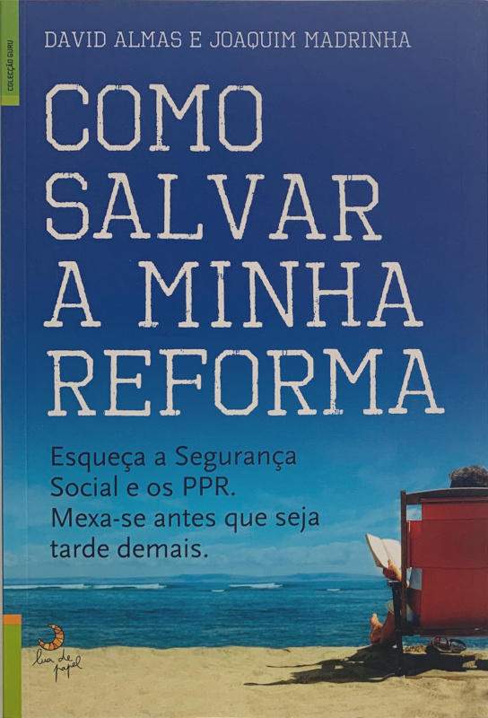
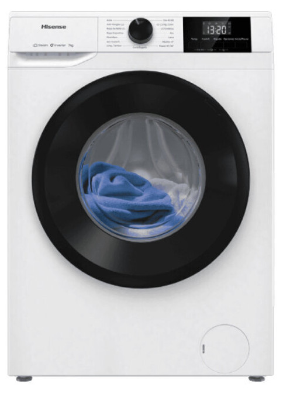
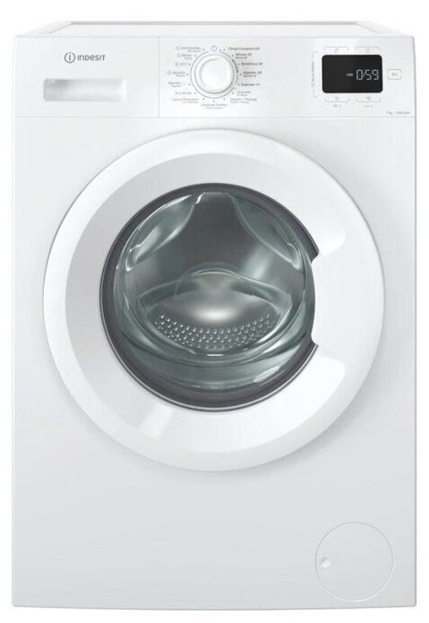
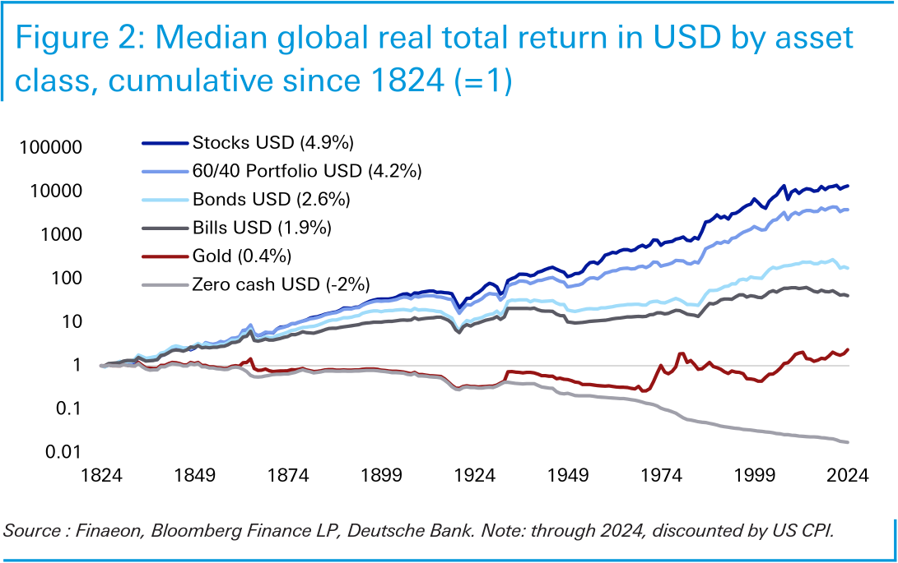

Finanças pessoais
David Almas
ex-jornalista,
investidor,
preguiçoso,
aposentado aos 41 anos.
como?
estudar
trabalhar
poupar
investir
Economia
Análise Financeira
Finanças
+
🧠
Jornal de Negócios
↓
…
↓
Observador

poupança ≈ 40% × rendimentos
🏡 = 35 6 anos
100% ações
r2000 > 9%
r2013 = 12%
comer, beber, ver os filhos crescer
comer, beber, socializar, viajar, ver os filhos crescer
missão: finanças pessoais
veículo: boletim tlim
finanças pessoais?
usa todo o conhecimento para otimizar recursos privados
fp(recursos) = max { bem-estar }
Prioridade?
Qual a melhor máquina de lavar roupa?

Hisense WF1G7021BW
299,99€

Indesit IM762MTSPT
379,99€
O que fazer a 80€?

O dinheiro “apenas é bom enquanto serve para que se não pense nele.”
Agostinho da Silva
FIRE
financial independence,
retire early
IFRA
independência financeira
e reforma antecipada
independência financeira:
dinheiro suficiente para se fazer o que se quiser
tlim.pt/europeia
david@tlim.pt